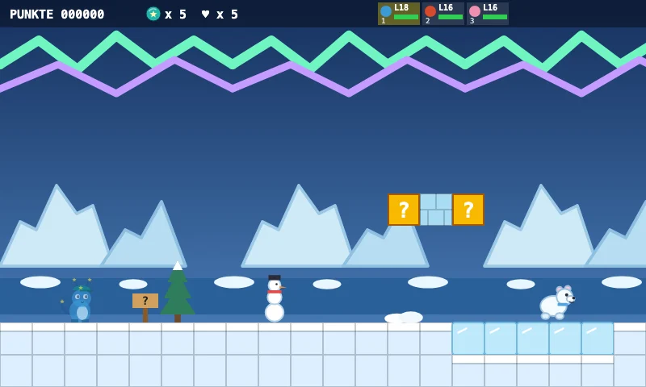
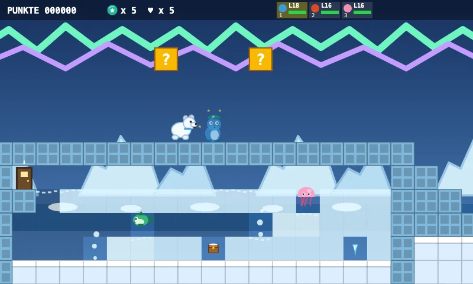
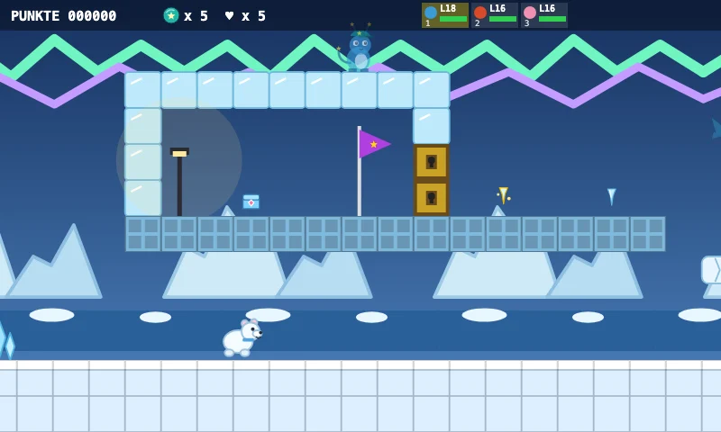
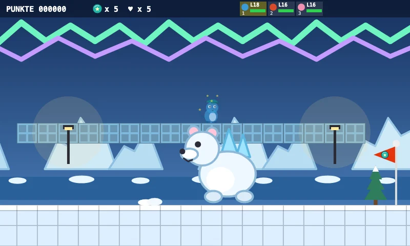
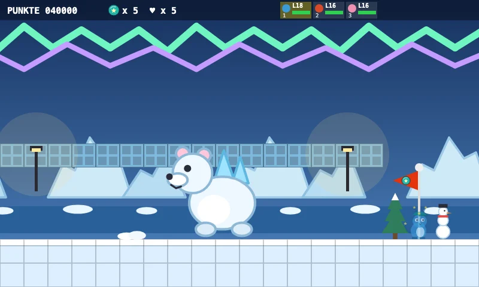

Avventura Zappilon
Mare polare
Benvenuto al mare polare! Il ghiaccio scivola e i lastroni si rompono per un attimo.
Raccogli cinque ghiaccioli: aprono l'igloo segreto!
Cinque scene del livello

Il mondo
Benvenuto al mare polare! Il ghiaccio scivola e i lastroni si rompono per un attimo.

Obiettivo
Raccogli cinque ghiaccioli: aprono l'igloo segreto!

Caratteristica
Salta sui lastroni fino all'igloo. Più avanti ti aspetta Ghiacciorso!

Boss
Ghiacciorso, custode del mare ghiacciato — Flammfux scioglie il ghiaccio benissimo!

Il tratto finale
La bandiera del traguardo ti aspetta alla fine. Ci arriverai?
Scopri segreti, affronta sfide speciali e trova la strada verso il traguardo.